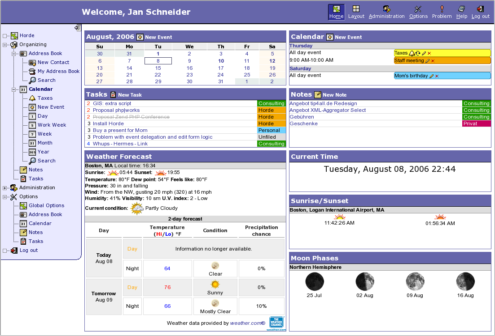

n earlier computing models, e.g. in client-server, the load for the application was shared between code on the server and code installed on each client locally. In other words, an application had its own client program which served as its user interface and had to be separately installed on each user's personal computer. An upgrade to the server-side code of the application would typically also require an upgrade to the client-side code installed on each user workstation, adding to the support cost and decreasing productivity. In addition, both the client and server components of the application were usually tightly bound to a particular computer architecture and operating system and porting them to others was often prohibitively expensive for all but the largest applications. In contrast, web applications use web documents written in a standard format such as HTML and JavaScript, which are supported by a variety of web browsers. Web applications can be considered as a specific variant of client-server software where the client software is downloaded to the client machine when visiting the relevant web page, using standard procedures such as HTTP. Client web software updates may happen each time the web page is visited. During the session, the web browser interprets and displays the pages, and acts as the universal client for any web application. In the early days of the Web each individual web page was delivered to the client as a static document, but the sequence of pages could still provide an interactive experience, as user input was returned through web form elements embedded in the page markup. However, every significant change to the web page required a round trip back to the server to refresh the entire page. In 1995 Netscape introduced a client-side scripting language called JavaScript allowing programmers to add some dynamic elements to the user interface that ran on the client side. So instead of sending data to the server in order to generate an entire web page, the embedded scripts of the downloaded page can perform various tasks such as input validation or showing/hiding parts of the page. In 1996, Macromedia introduced Flash, a vector animation player that could be added to browsers as a plug-in to embed animations on the web pages. It allowed the use of a scripting language to program interactions on the client side with no need to communicate with the server. In 1999, the "web application" concept was introduced in the Java language in the Servlet Specification version 2.2. [2.1?].[2][3] At that time both JavaScript and XML had already been developed, but Ajax had still not yet been coined and the XMLHttpRequest object had only been recently introduced on Internet Explorer 5 as an ActiveX object.[4] In 2005, the term Ajax was coined, and applications like Gmail started to make their client sides more and more interactive. A web page script is able to contact the server for storing/retrieving data without downloading an entire web page. In 2011, HTML5 was finalized, which provides graphic and multimedia capabilities without the need of client side plug-ins. HTML5 also enriched the semantic content of documents. The APIs and document object model (DOM) are no longer afterthoughts, but are fundamental parts of the HTML5 specification. WebGL API paved the way for advanced 3D graphics based on HTML5 canvas and JavaScript language. These have significant importance in creating truly platform and browser independent rich web applications.
